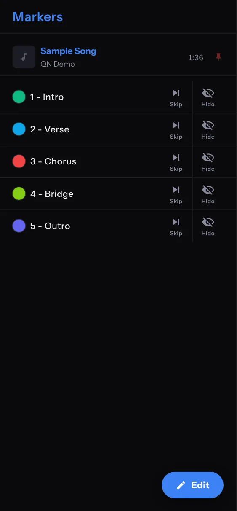
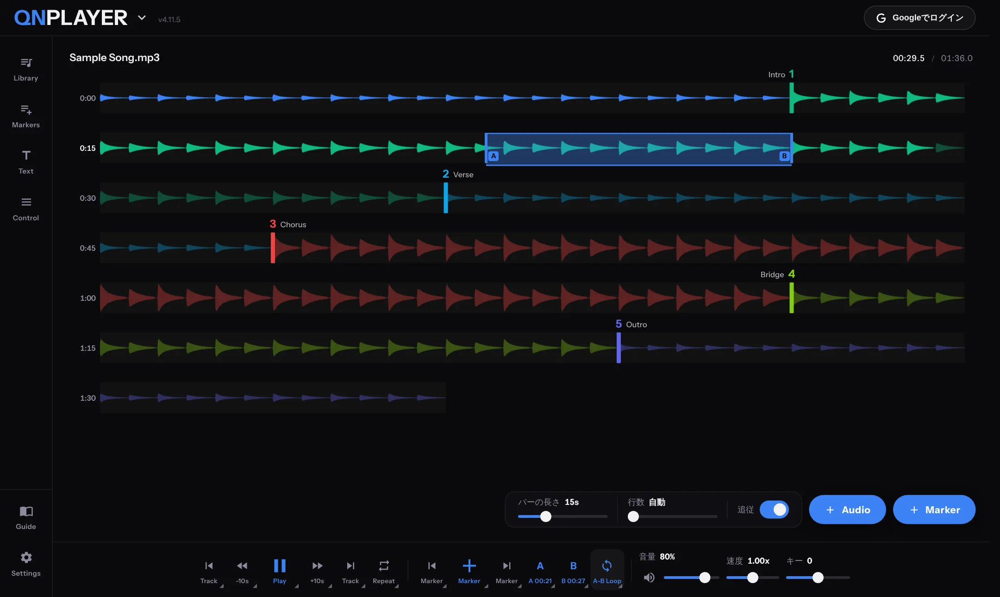

GETTING STARTED
はじめての方へ
起動から、音源の読み込み、マーカー設置、ループ再生までの流れです。
起動してから、曲を読み込み、マーカーで区間を作ってループ再生するまでの流れです。6 ステップで終わります。
- 起動する
QNPLAYER の URL をブラウザで開きます。ロゴのスプラッシュ画面のあと、プレイヤーが開きます。
- ログインは任意です。ログインしなくても使い始められます。
- 音源を読み込む
Library を開き、タイトル右の Audio ボタンを押して、ファイルを選びます。波形エリア右下の Audio ボタンや、ファイルのドラッグ＆ドロップでも追加できます。
- 複数のファイルをまとめて選べます。追加した曲は Library に保存され、タップすると再生できます。

Library。Audio で曲を追加し、Folder でフォルダを作ります。 - 再生して、位置を決める
下部コントロールの Play（キーボードは Space）で再生・一時停止します。波形シークバーをタップすると、その位置から再生します。

波形をタップすると、その位置から再生され、A・B・Marker・Loop のポップアップが開きます。 - マーカーを置く
区切りたい位置で、下部コントロールの Marker（＋）を押します。キーボードは P または M です。ポップアップの Marker でも、タップした位置に置けます。
- スマートフォンでは、波形を長押ししてもマーカーを置けます。
- 置いたマーカーは、ドラッグして位置を動かせます。
- 2 個以上置くと、となりあうマーカーの間が 1 つの「区間」になります。
- Markers を開くと、一覧で確認できます。色丸をタップすると、Intro や Chorus などのメモを付けられます。

Markers の一覧。メモを付けると、色も自動で付きます。 - ループする
Loop ボタンを押すたびに、OFF、A-B、Section と切り替わります。
- Section：再生中の区間（マーカーから次のマーカーまで）をくり返します。
- A-B：A 点と B 点の間をくり返します。A・B ボタン（またはポップアップの A・B）で位置を決めます。

A-B ループ。A 点と B 点の間が青く表示されます。 - 速度やキーを変える
Control を開き、速度とキーを調整します。ゆっくり練習したいときは速度を下げます。音の高さを変えたいときはキーを動かします。

Control。音量、速度、オートスピード、キー、イコライザーを調整します。
MEMO曲、マーカー、A-B 点、テキストは自動で保存されるので、ページを閉じても続きから使えます。保存場所と注意点は 保存・バックアップ・同期 を見てください。
ご注意無料版では、Library は 3 曲まで、マーカーは曲あたり先頭 3 個まで、速度・キー・EQ は使えません。くわしくは 無料版とPremium を見てください。